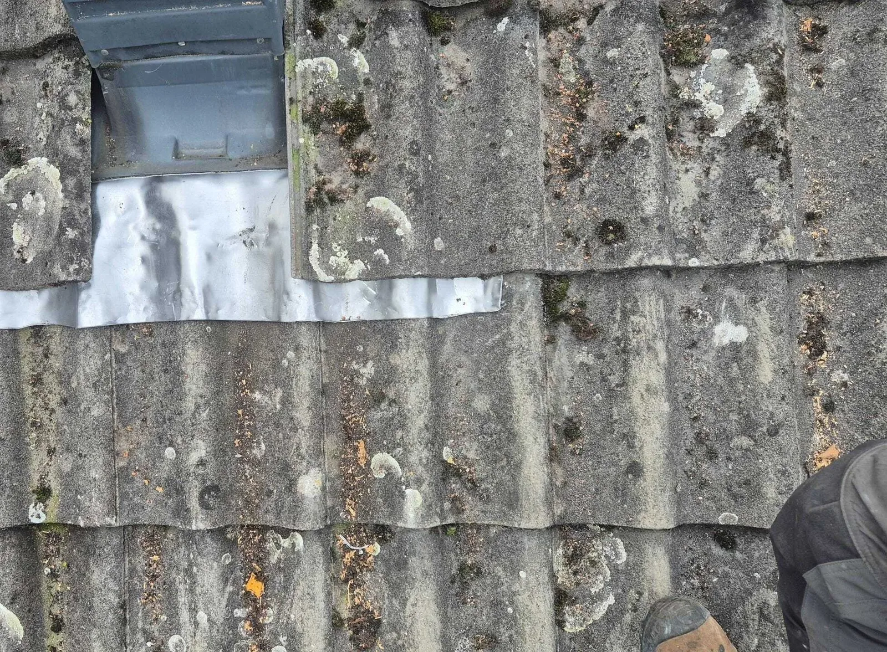
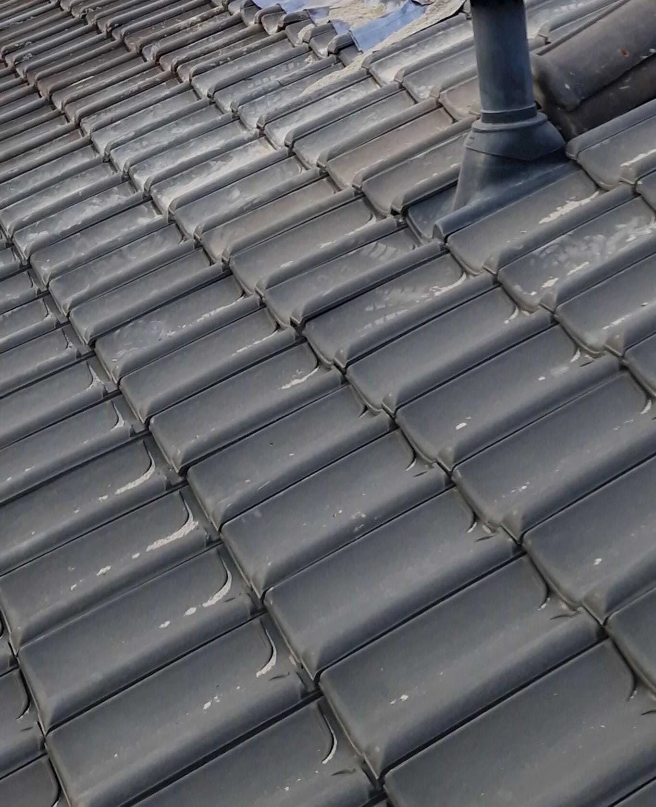
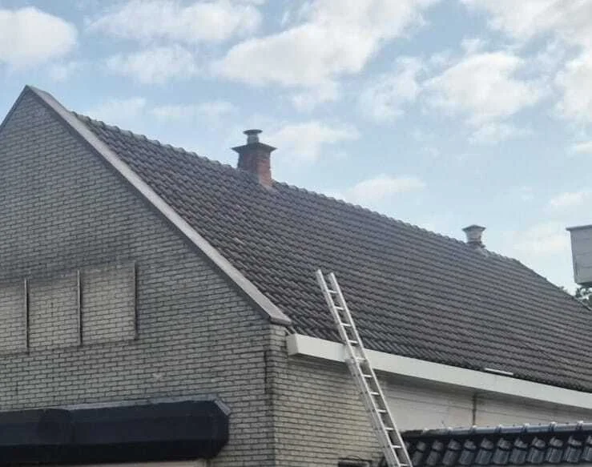
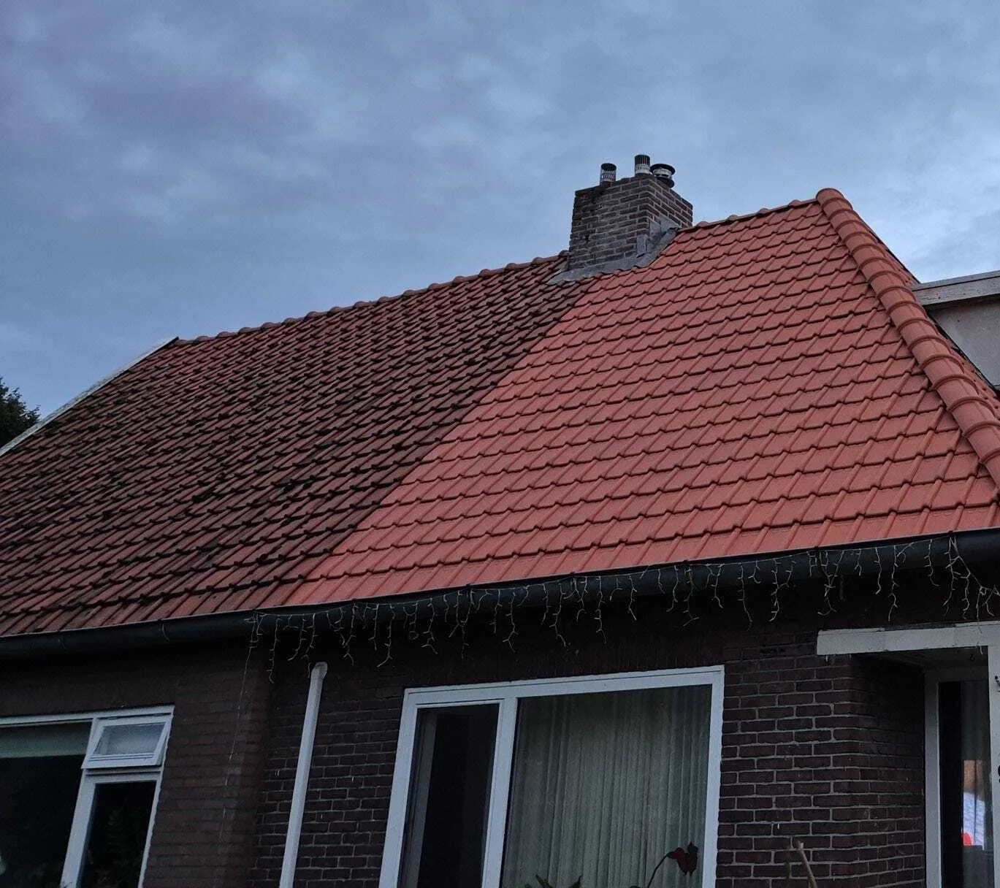
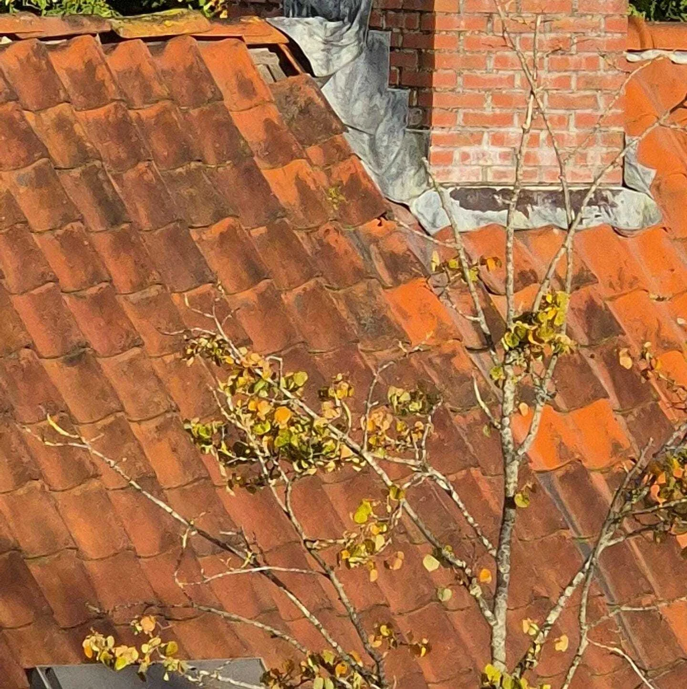
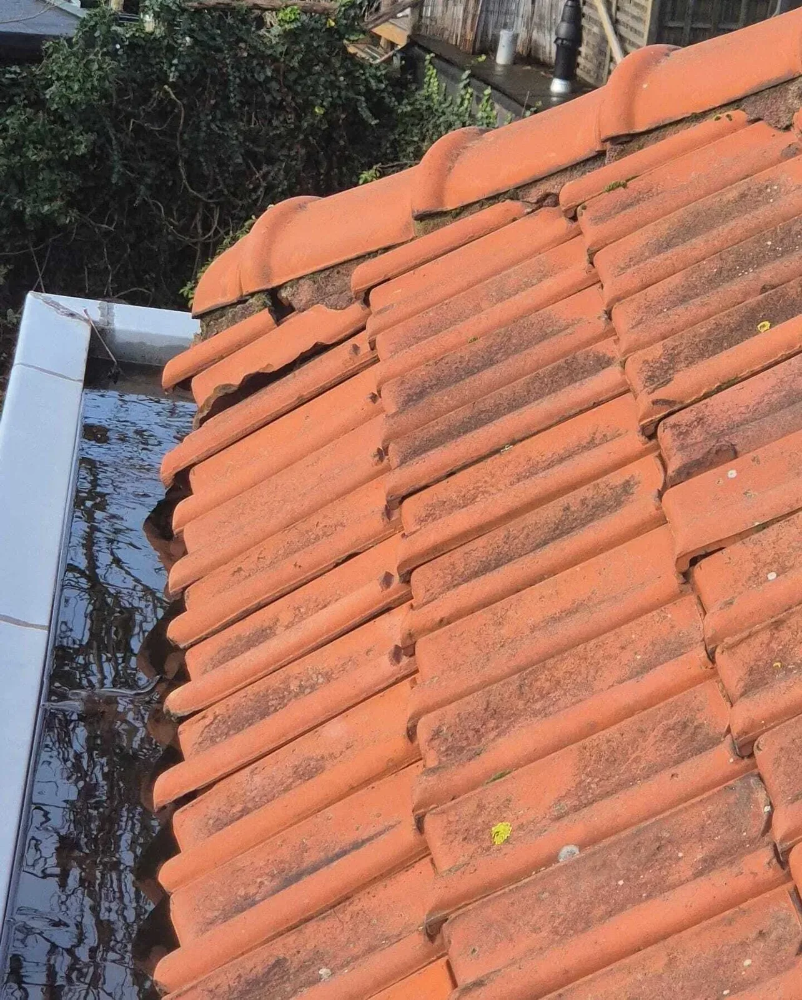
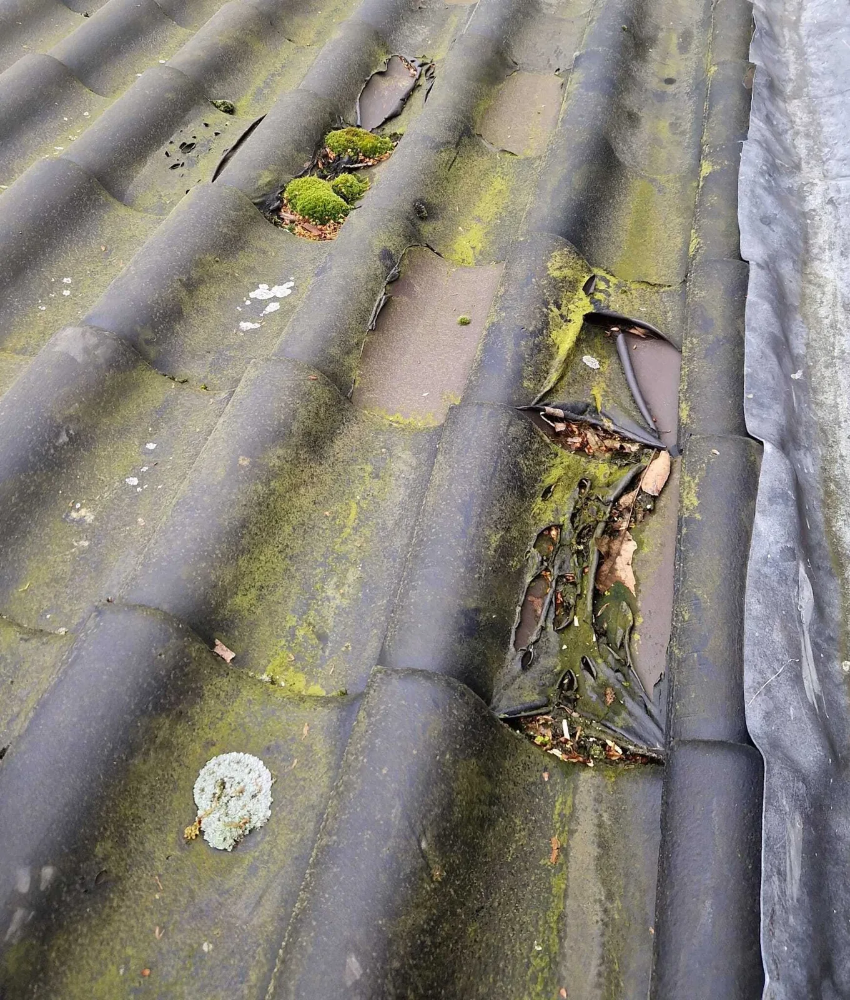

Cluster 18
Veroudering & levensduur
Een thematische kennisbanksectie met een pillarpagina en ondersteunende artikelen. Begin bij de hoofdpagina voor overzicht, of kies direct het specifieke onderwerp dat past bij uw situatie.

Artikelen in dit cluster
De pillar pagina geeft het overzicht. De ondersteunende blogs behandelen deelvragen, signalen, kosten, risico's en praktische keuzes.

Cumulatieve weersbelasting: waarom daken pas laat schade tonenOndersteunende blog
Hoe onderhoud de levensduur van een dak beïnvloedt (en wat niet)Ondersteunende blog
Hoe dakmaterialen verouderen door zon, regen en temperatuurOndersteunende blog Levensduur van daken: wanneer veroudering normaal is (en wanneer niet)Pillar pagina
Normale dakveroudering of schade? Zo herken je het verschilOndersteunende blog
Waarom de leeftijd van een dak weinig zegt over de echte staatOndersteunende blog
Wanneer is een dak technisch ‘op’? Dit zegt de staat, niet de leeftijdOndersteunende blog